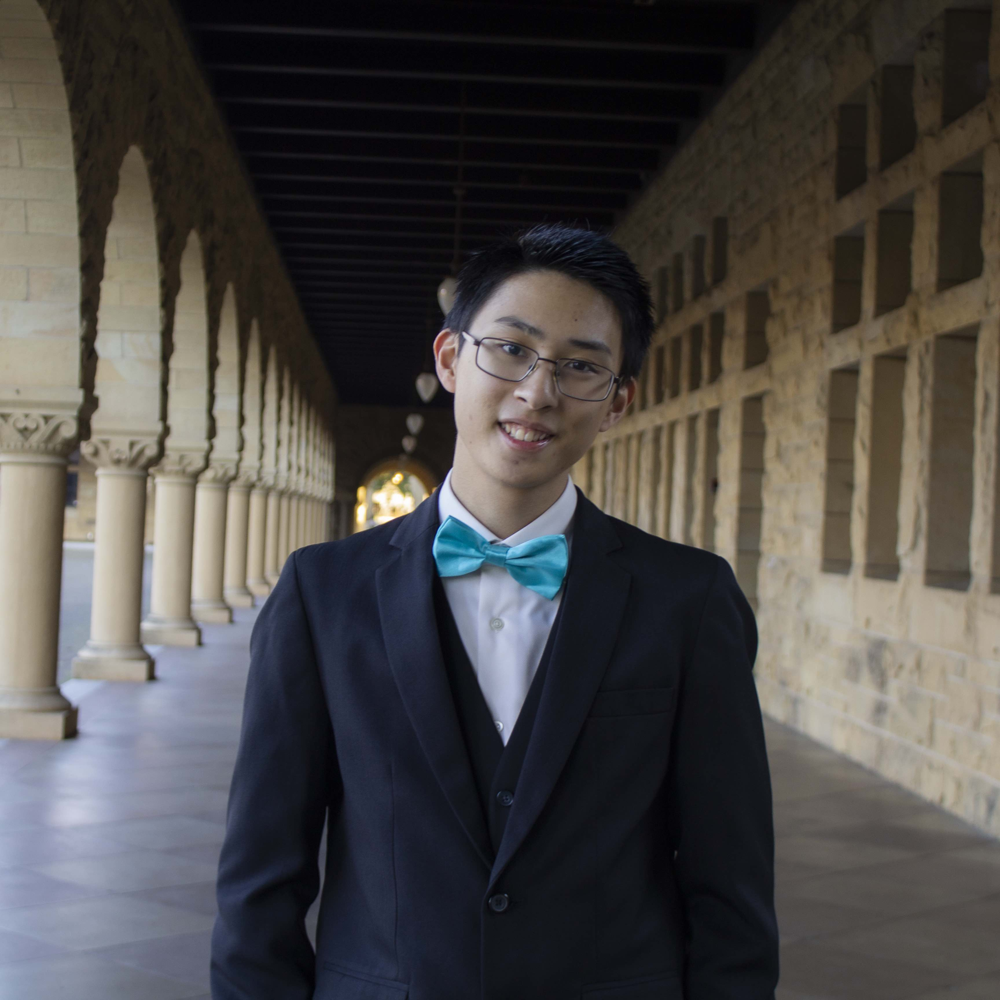

|
Jesse Doan
|
 |
B.S. in Computer Science, Dec 2021
Stanford University
M.S. in Computer Science, June 2022
Stanford University
E-mail: jesseqd [AT] alumni [DOT] stanford [DOT] edu
|
About me
I graduated from Stanford University in 2022 with a Bachelor's and a Master's in Computer Science with specializations in Theory and Artificial Intelligence, respectively. Currently, I am a Machine Learning Engineer at Nuro on the Machine Learning Research team. My focus is on leveraging technology to support innovative solutions to challenging problems, including K-12 education.
During my time at Stanford, I served as a Section Leader for the introductory Computer Science courses through the Stanford Computer Science Department. In 2018 and 2019, I co-organized Stanford ProCo, a computer programming contest for high school students.
Some of the projects that I have completed at Stanford include a low-level Smart Mirror, AI Agents for Ultimate Tic-Tac-Toe (poster), Learned Hash Index (paper, slides), Student Ability Growth Estimator (SAGE) (website), and Active Tutored Learning Through Adaptive Systems (ATLAS) (paper, slides).
Throughout middle and high school, I founded and organized the Maui Math Challenge, an annual elementary school math contest aimed at teaching problem-solving skills and sparking interest in young minds to excel in math. In addition, I have published two math competition books for beginning mathletes. My ultimate goal is to equip students with the problem-solving skills that are needed to solve the challenges of the 21st Century.
Experience
Nuro
Machine Learning Engineer (Sept 2022 - Present)
Nuro is a leading autonomous vehicle company. Our mission is to better everyday life through robotics and strengthen local communities with our electric, zero-occupant autonomous delivery vehicles.
MITRE
Graduate Machine Learning and Software Engineering Intern (June 2021 - Sept 2021)
MITRE is a not-for-profit organization that manages federally funded research and development centers (FFRDCs) supporting various U.S. government agencies in the aviation, defense, healthcare, homeland security, and cybersecurity fields, among others.
Developed a novel and efficient clustering algorithm to identify hotspots of activity from large mobility datasets
Implemented algorithm at scale using existing open-source and in-house data analysis libraries, including Google’s S2 Geometry, used to tile the surface of the earth into grid cells
Evaluated algorithm’s performance on Microsoft’s GeoLife dataset, containing 17,621 GPS datapoints from 182 users over a span of 3 years, achieving a runtime of 3 minutes
Obtained a 20x runtime speedup and improved scores by 30% from baseline DBSCAN algorithm
TeacherPrints
Machine Learning and Software Engineering Intern (May 2021 - July 2021)
TeacherPrints is a free instructional coaching app that utilizes personalized, data-driven visualizations to help teachers bring the reality of their lesson delivery in line with their expectations and goals.
Fixed model output data pipeline with Django/Docker
Engineered Design/Prototype of Teacher Portfolio
Implemented ML application of Speaker Diarization, which tracks unique speakers throughout an audio file
Computational Education Lab
Research Assistant (Mar 2019 - Dec 2019)
Work on TinyFeedback, an individually designed project focused on providing quick, incremental feedback for student teachers in introductory computer science courses
Design and run an experiment to test out hypotheses based on education research and a prior exploratory study
Develop a web development tool to facilitate TinyFeedback
Coursework
Computer Science Depth - Artificial Intelligence
Computer Science Depth - Theory
Computer Science Core + Breadth
Education
Engineering and Math
Publications
Doan, Jesse. For The Rising Math Olympians. Createspace Independent Publishing Platform, 2016. Print. (Amazon, website)
Doan, Jesse and Steven Doan. Elementary School Math Contests. Createspace Independent Publishing Platform, 2017. Print. (Amazon)
Teaching
Other Links
LinkedIn
Résumé
|